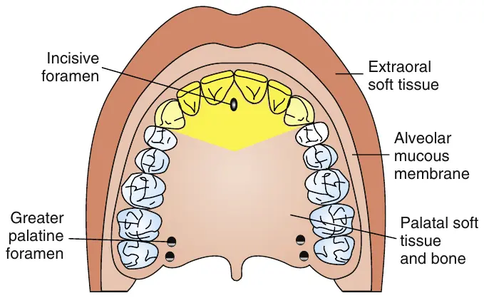
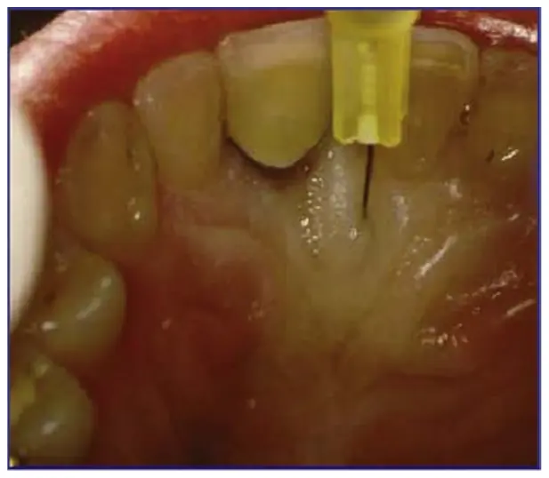

نسخه استخراجشده؛ ترجمه یا تأیید علمی انجام نشده است. وضعیت: captured
مردی ۴۵ ساله برای جرمگیری عمقی و root planing شش دندان قدامی بالا آمده است. کار از کانین راست تا کانین چپ است و بیمار نمیخواهد تا عصر لبش بیحس بماند. با یک نقطهی تزریق میشود؟

بله، با بلاک آلوئولار فوقانی قدامی از راه کام (P-ASA). این نخستین تزریقی است که هدف اصلیاش بیحسی پالپ هر دو طرف با یک تزریق است. عصب نازوپالاتین و شاخههای قدامی عصب آلوئولار فوقانی قدامی (ASA) بیحس میشوند.
نقطهی ورود یکی است: کنار پاپیلای اینسیزیو. اما در P-ASA سوزن وارد کانال اینسیزیو میشود. حجم نازوپالاتین حداکثر ۰٫۴۵ میلیلیتر است و P-ASA ۱٫۴ تا ۱٫۸ میلیلیتر. نازوپالاتین برای جراحی کام قدامی است؛ P-ASA روش اصلی بیحسی پالپ شش دندان قدامی.
سوزن: کوتاه، گیج ۲۷. ورود: درست کنار پاپیلای اینسیزیو، در شیار کنار آن. هدف: سوراخ نازوپالاتین.

نشانهی موفقیت: سفیدی کام و لثهی چسبنده از کانین تا کانین. سفیدی یکطرفه یعنی بیحسی یکطرفه؛ محلول بیشتری بریز. کانین با ریشهی بلند را با تزریقی از کام نزدیک اپکس کانین کامل کن؛ بهندرت اینفیلتراسیون باکال لازم میشود.
گاهی سوزن عصب نازوپالاتین را تحریک میکند و بیمار جا میخورد. آرامش کن، سوزن را کمی جابهجا کن و پیش از پیشروی بیشتر محلول بریز. اپینفرین ۱:۵۰٬۰۰۰ اینجا هم منع دارد.